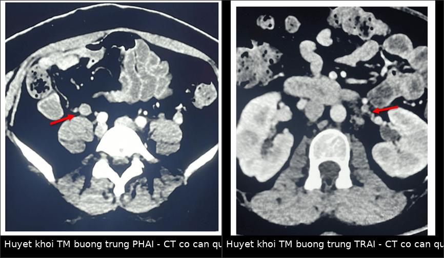
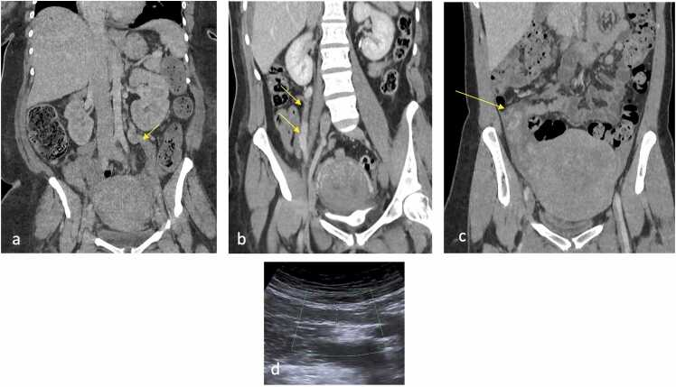
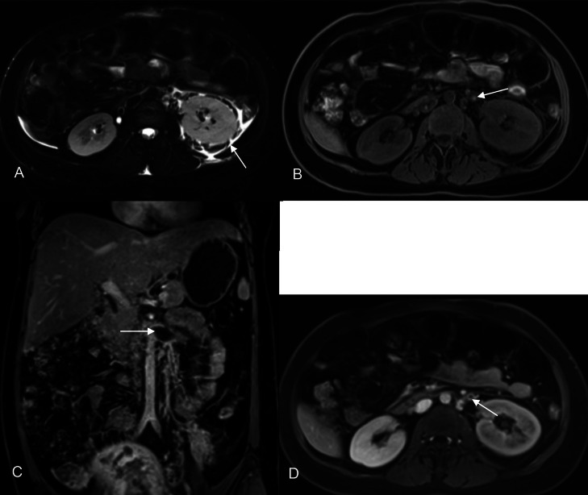
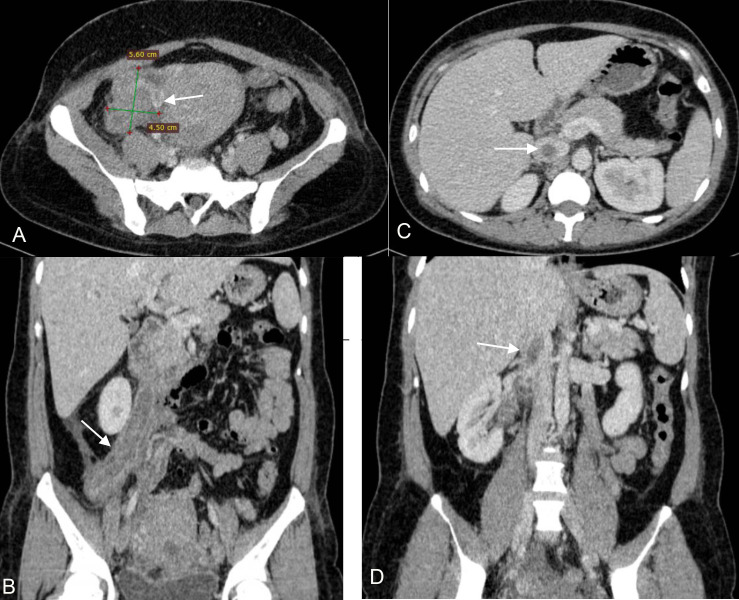

1623 — Huyết khối tĩnh mạch buồng trứng sau sinh / Postpartum ovarian vein thrombosis (POVT)
Tags: pattern:huyet-khoi-mach pattern:khuyet-thuoc-long-mach vung:phan-phu vung:tieu-khung vung:than protocol:CT-bung-co-can-quang protocol:MRI-bung score:HU-nguong-36
Mức chắc chắn (certainty): tổng hợp y văn (literature synthesis) — gồm 1 nghiên cứu đo HU trên CT không cản quang (Zeng W et al., BMC Pregnancy Childbirth 2026, PMC13471637, n = 52), 1 phân tích gộp về kháng đông (Riva N et al., Res Pract Thromb Haemost 2024, PMC11339252, 17 nghiên cứu / 997 bệnh nhân), 1 bài tổng quan hình ảnh sau sinh (Agarwal G et al., Eur J Radiol Open 2026, PMC13351678) và 2 báo ca có bàn luận chẩn đoán (Huynh QH et al., Radiol Case Rep 2025, PMC12084400; Alghamdi KM et al., Cureus 2026, PMC13430492). Chỗ hai nguồn mâu thuẫn (tỷ lệ mắc) được ghi rõ là mâu thuẫn nguồn, không chọn bừa.
1. Tổng quan bệnh học – cơ chế hình ảnh
- Bệnh học: huyết khối (thrombus) trong tĩnh mạch buồng trứng (ovarian vein — OV), thường kèm viêm tắc tĩnh mạch nhiễm khuẩn (septic pelvic thrombophlebitis) sau sinh. Tam chứng Virchow đủ cả ba vế trong ổ bụng sau sinh: ứ trệ (tử cung to chèn ép, tư thế xoay phải của tử cung khi mang thai), tăng đông (thai kỳ – hậu sản), tổn thương nội mạc (nhau bong, mổ lấy thai, nhiễm trùng tử cung) (Huynh QH et al. 2025).
- TẠI SAO bên phải chiếm đa số (~90%): tĩnh mạch buồng trứng phải dài hơn, ngoằn ngoèo hơn, đổ vào tĩnh mạch chủ dưới (IVC) theo góc nhọn → tốc độ dòng chảy giảm; van yếu hơn; trong thai kỳ tử cung xoay phải chèn ép tĩnh mạch phải. Tĩnh mạch trái đổ vào tĩnh mạch thận trái nên ít bị hơn (Huynh QH et al. 2025). Vì vậy khi thấy huyết khối bên trái, luôn phải tìm nguyên nhân khác (ung thư, tăng đông, sau mổ) — chi tiết ở mục 5.
- Dịch tễ — hai nguồn lệch nhau, ghi nguyên vẹn: (a) 0,02% sau sinh đường âm đạo và 0,1% sau mổ lấy thai (Zeng W et al. 2026); (b) 0,05–0,18% sau sinh đường âm đạo và 1–2% sau mổ lấy thai (Huynh QH et al. 2025). Con số thực có thể nằm giữa hai khoảng; không dùng một con số duy nhất để tư vấn nguy cơ. Điểm thống nhất: mổ lấy thai làm tăng nguy cơ rõ rệt (trong đoàn hệ 25 ca POVT có 15 ca mổ lấy thai).
- TẠI SAO nguy hiểm: huyết khối lan liên tục vào tĩnh mạch thận hoặc IVC và có thể bắn lên phổi. Trong đoàn hệ 25 ca, 40% (10/25) có huyết khối đồng thời nơi khác: 4 ca lan trực tiếp (IVC/tĩnh mạch thận/tĩnh mạch chậu ngoài), 4 ca trong đám rối tĩnh mạch chậu – tĩnh mạch tử cung, 2 ca thuyên tắc xa (động mạch phổi, tĩnh mạch cảnh trong) (Zeng W et al. 2026). Y văn dẫn: thuyên tắc phổi 25% ở ca không điều trị, tử vong tới 4% (dẫn trong Zeng W et al. 2026).
- Thời điểm: khảo sát trong 1–11 ngày sau sinh, trung bình 4,48 ± 3,14 ngày (Zeng W et al. 2026) — khớp với mô tả "tuần đầu hậu sản" (Huynh QH et al. 2025). Sốt + đau hông lưng/bụng dưới vẫn sốt sau khi đã dùng kháng sinh đúng là bối cảnh kinh điển.
- TẠI SAO máu cục sáng hơn trên CT không cản quang (cơ chế vật lý): cục máu đông co lại, cô đặc hemoglobin và protein, không còn dòng chảy pha loãng → tăng tỷ trọng so với máu lưu thông. Đo được: P-CT 45,52 ± 15,88 HU ở ca bệnh vs 30,07 ± 4,92 HU ở chứng (P < 0,001); ngưỡng 36 HU cho độ nhạy 72%, độ đặc hiệu 92,6% (AUC 0,773) (Zeng W et al. 2026). Tỷ lệ P-CT/IVC ≥ 1,105 cũng là ngưỡng có ý nghĩa (Se 64%, Sp 92,6%).
- TẠI SAO khuyết thuốc là dấu chốt trên CT có cản quang: thành tĩnh mạch ngấm thuốc trong khi lòng mạch bị cục máu lấm tấm không ngấm → "target sign": vòng sáng + lòng tối. Giá trị đo: E-CT 57,36 ± 17,62 HU (bệnh) vs 113,33 ± 29,18 HU (chứng), AUC 0,963 — cao hơn mọi chỉ số khác (Zeng W et al. 2026). CT có cản quang được báo cáo Se 100%, Sp 99% cho POVT (dẫn trong Huynh QH et al. 2025) — con số này lấy từ y văn tham khảo, chưa phải thử nghiệm tiền cứu.
- TẠI SAO MRI hữu ích khi không dùng được cản quang: huyết khối bán cấp chứa methemoglobin → T1W tăng tín hiệu, T2W giảm; mất flow void. Ca 2 của Huynh QH et al. (2025) cho thấy đúng chuỗi này: T2 fat-sat có thận trái to + dịch quanh thận (ứ trệ do tắc tĩnh mạch thận), T1W tăng tín hiệu trong lòng tĩnh mạch, sau gadolinium thấy khuyết thuốc ở tĩnh mạch thận và tĩnh mạch buồng trứng trái.
- Siêu âm (first-line tại giường): cấu trúc dạng ống, không xẹp được, echo kém, Doppler mất hoặc giảm dòng. Độ chính xác phụ thuộc người làm: Se 55,6–63%, Sp 41,6–78% (dẫn trong Huynh QH et al. 2025) — siêu âm âm không loại trừ.
- D-dimer: tăng sinh lý trong thai kỳ/hậu sản nên giá trị hạn chế; tuy nhiên D-dimer 5.398 ± 7.265 vs 2.145 ± 2.393 ng/mL (P < 0,05) và ngưỡng 2.780,5 ng/mL dự báo huyết khối đồng thời nơi khác với AUC 0,813 (Se 90%, Sp 66,7%) (Zeng W et al. 2026). Dùng để phân tầng ca lan rộng, không để chẩn đoán POVT đơn thuần.
2. Mẫu hình + chẩn đoán phân biệt theo vị trí (gamut)
Trục A — theo bên và mức lan (quyết định kháng đông bao lâu, có cần lọc IVC):
- Phải đơn thuần (~90% y văn; 52% trong đoàn hệ 25 ca): ống tĩnh mạch giãn, khuyết thuốc, thâm nhiễm mỡ quanh mạch; bờ dưới tới ngã ba IVC.
- Trái (6% y văn; 20% đoàn hệ): lan lên tĩnh mạch thận trái → thận to, ứ nước quanh thận; bắt buộc tìm nguyên nhân nền vì hiếm.
- Hai bên (14% y văn; 28% đoàn hệ): thường nặng hơn, huyết khối lan IVC nhiều hơn; đo bên lan dài nhất khi tính chỉ số (Zeng W et al. 2026).
- Lan IVC/tĩnh mạch thận/tĩnh mạch chậu (40% ca có huyết khối nơi khác) — đây là nhóm quyết định lọc IVC và theo dõi thuyên tắc phổi.
- Viêm tắc tĩnh mạch nhiễm khuẩn + thuyên tắc phổi nhiễm khuẩn: sốt cao, cấy máu dương, nốt mờ ngoại vi phổi có hang — bệnh cảnh "sốt sau sinh kéo dài dù kháng sinh".
Trục B — gamut "khuyết thuốc/dày quanh tĩnh mạch buồng trứng" (theo mimic):
- Giãn tĩnh mạch buồng trứng sinh lý hậu sản — ống to nhưng ngấm thuốc đều, không khuyết thuốc, không thâm nhiễm mỡ (xem ảnh mục 3).
- Huyết khối do khối u chèn ép (ung thư buồng trứng/thận/tử cung, di căn) — huyết khối bên trái, kèm khối, không có bối cảnh hậu sản.
- Viêm mô tế bào chậu/áp-xe phần phụ (TOA) — khối có vỏ ngấm thuốc, khí trong ổ, nhưng tĩnh mạch vẫn ngấm thuốc.
- Viêm thận – bể thận cấp — thận to, giảm ngấm thuốc dạng hình nêm, dày cân quanh thận; thường đi cùng POVT nên đừng dừng khi thấy viêm thận.
- Xoắn phần phụ — buồng trứng to, cuống xoắn "whirlpool", không có khuyết thuốc trong tĩnh mạch.
- Sỏi niệu quản — đau quặn, ứ nước; đừng nhầm niệu quản giãn với tĩnh mạch giãn (mục 5).
- Viêm nội mạc tử cung — nội mạc dày, dịch/khí trong buồng tử cung, tĩnh mạch bình thường.
3. Bảng so sánh phân biệt (ma trận đối chiếu)
| Thực thể (entity) | Hình ảnh điển hình | Chốt vào (rule-in) | Chốt loại (rule-out) | Gợi ý xác nhận |
|---|---|---|---|---|
| POVT | Ống tĩnh mạch giãn, thành ngấm thuốc, lòng có khuyết thuốc, mỡ quanh mạch thâm nhiễm; phải > trái | Khuyết thuốc trong tĩnh mạch buồng trứng + thành mạch ngấm thuốc | Lòng mạch ngấm thuốc đều hết trên thì tĩnh mạch → không phải huyết khối | CT tĩnh mạch; MRI nếu cấm cản quang; siêu âm Doppler |
| Giãn tĩnh mạch sinh lý hậu sản | Ống to (đường kính tăng), bờ nhẵn, không thâm nhiễm mỡ, ngấm thuốc đều | Ngấm thuốc đầy lòng + không viêm quanh mạch | Có khuyết thuốc + dày thành + thâm nhiễm → POVT | So sánh hai bên; Doppler thấy dòng |
| Huyết khối do ung thư chèn ép | Huyết khối + khối nguyên phát (buồng trứng/thận/tử cung), thường bên trái, không hậu sản | Có khối đặc + huyết khối cùng vùng | Không khối, bối cảnh hậu sản điển hình → POVT đơn thuần | CT bụng–chậu có cản quang; CA-125 theo lâm sàng |
| Viêm tắc tĩnh mạch nhiễm khuẩn | POVT + sốt cao, cấy máu (+), nốt phổi ngoại vi/hang | POVT + thuyên tắc phổi nhiễm khuẩn | Không sốt, không ổ nhiễm → huyết khối "lạnh" | Cấy máu, X-quang/CT ngực |
| Áp-xe phần phụ (TOA) | Khối có vỏ ngấm thuốc, dịch, khí trong ổ, dính quai ruột | Khối dạng ổ + khí, tách khỏi tĩnh mạch | Tĩnh mạch ngấm thuốc bình thường | Siêu âm đầu dò âm đạo; theo dõi kháng sinh |
| Xoắn phần phụ | Buồng trứng to, cuống xoắn, giảm/không ngấm thuốc | Dấu "whirlpool" ở cuống + buồng trứng to | Không có khuyết thuốc tĩnh mạch | Siêu âm Doppler; mổ cấp cứu |
| Viêm thận – bể thận | Thận to, giảm ngấm thuốc hình nêm, dày cân quanh thận | Tổn thương nhu mô thận + ứ nước | Chỉ dày cân quanh thận do ứ trệ → nghĩ tắc tĩnh mạch thận | CT có cản quang; luôn đọc kèm tĩnh mạch buồng trứng |
| Sỏi niệu quản | Nốt cản quang trong đường đi niệu quản, ứ nước trên chỗ tắc | Sỏi trong lòng niệu quản + ứ nước | Cấu trúc dạng ống mềm, không cản quang → tĩnh mạch | CT không cản quang (sỏi); đối chiếu thì tĩnh mạch |

Hai ca POVT sau sinh trên CT có cản quang: trái — huyết khối tĩnh mạch buồng trứng phải; phải — huyết khối tĩnh mạch buồng trứng trái. Nguồn: Alghamdi KM et al., Cureus 2026;18(7):e112028, PMC13430492 Fig. 1–2, CC BY 4.0 — ảnh ghép letterbox bằngtools/make_composite.py, không crop/kéo giãn.

(a,b) Tĩnh mạch buồng trứng giãn sinh lý hậu sản: bờ nhẵn, không thâm nhiễm mỡ. (c) POVT phải: tĩnh mạch giãn, viêm, có dịch quanh. (d) Doppler: mất dòng trong tĩnh mạch buồng trứng phải. Nguồn: Agarwal G et al., Eur J Radiol Open 2026;17:100789, PMC13351678 Fig. 13, CC BY 4.0.Ba dấu hiệu đọc theo thứ tự (dùng như checklist)
- Có khuyết thuốc trong lòng tĩnh mạch không? — nếu có, đo đường kính ống và mức lan (IVC? tĩnh mạch thận?).
- Thành mạch có ngấm thuốc và mỡ quanh mạch có thâm nhiễm không? — phân biệt huyết khối "cũ, xơ" với viêm tắc cấp.
- Có huyết khối nơi khác không? — IVC, tĩnh mạch thận, đám rối chậu, và phổi (thuyên tắc nhiễm khuẩn).

Ca POVT trái lan tĩnh mạch thận: (A) T2 fat-sat — thận trái to + dịch quanh thận; (B) T1W — huyết khối tăng tín hiệu (methemoglobin); (C,D) sau gadolinium — khuyết thuốc ở tĩnh mạch thận và tĩnh mạch buồng trứng trái. Nguồn: Huynh QH et al., Radiol Case Rep 2025;20(7):3447–3453, PMC12084400 Fig. 5, CC BY-NC-ND 4.0 — dùng nguyên bản, không chỉnh sửa.4. Protocol chụp + cách xử trí theo mức lan
Chọn modality theo bối cảnh:
| Bối cảnh | Chọn | Lý do / ngưỡng |
|---|---|---|
| Đau bụng + sốt hậu sản, chưa rõ | Siêu âm bụng–chậu + Doppler trước | Không xạ, tại giường; nhưng Se 55,6–63% → âm không loại trừ |
| Nghi POVT, không chống chỉ định cản quang | CT bụng–chậu có cản quang, thì tĩnh mạch cửa, lát ≤ 1 mm | Se ~100% theo y văn; thấy mức lan IVC/thận và ổ nhiễm kèm |
| Đang cho con bú / dị ứng cản quang / cần tránh xạ | MRI bụng: T1W, T2W fat-sat, T1 sau gadolinium ± DWI | Huyết khối T1 tăng, T2 giảm, mất flow void; thấy toàn bộ chiều dài tĩnh mạch |
| Đã có POVT, tìm nguyên nhân khi bên trái hoặc không hậu sản | CT/MRI toàn ổ bụng + tầm soát ung thư | Bên trái hiếm (6%) → phải loại khối chèn ép |
Đo và ghi vào phiếu (theo Zeng W et al. 2026):
- HU cục máu trên ảnh không cản quang (P-CT) và tỷ lệ P-CT/IVC — ngưỡng gợi ý 36 HU và 1,105.
- HU cục máu trên thì tĩnh mạch (E-CT) và tỷ lệ E-CT/IVC — càng thấp càng chắc huyết khối.
- Đường kính lớn nhất của huyết khối / đường kính IVC (D-ratio) — ngưỡng 0,51 phân biệt với chứng; 12,1 mm và D-ratio 0,61 ở nhóm có huyết khối nơi khác.
- Mức lan: tĩnh mạch thận, IVC, đám rối chậu; đo bên lan dài nhất nếu hai bên.
Điều trị (số liệu để tư vấn):
| Vấn đề | Số liệu / ngưỡng | Nguồn |
|---|---|---|
| Kháng đông: thời gian thực tế trong y văn | ≤ 3 tháng: 47,1% nghiên cứu; > 3–6 tháng: 35,3%; > 6 tháng: 17,6% | Riva N et al. 2024 (17 nghiên cứu) |
| Thuốc hay dùng | heparin đơn thuần 45,7%, chuyển kháng vitamin K 39,2% | Riva N et al. 2024 |
| Tái phát huyết khối khi có kháng đông | 3,49% (95% CI 1,12–6,95; 22/482) | Riva N et al. 2024 |
| Tái phát khi không kháng đông | 8,65% (95% CI 2,61–17,35); RR 0,70 (0,36–1,37) — khác biệt không có ý nghĩa | Riva N et al. 2024 |
| Chảy máu nặng | 1,27% (95% CI 0,48–2,38) | Riva N et al. 2024 |
| Tử vong ở nhóm điều trị | 2,43% (95% CI 0,54–5,41) | Riva N et al. 2024 |
| Tái thông mạch | 89,4% (95% CI 74,6–98,6; 163/184) | Riva N et al. 2024 |
| Thuyên tắc phổi nếu không điều trị | 25%, tử vong 4% | dẫn trong Zeng W et al. 2026 |
- Kháng sinh: dùng cùng kháng đông khi có sốt/nhiễm khuẩn hậu sản (clindamycin, gentamicin, quinolone, cephalosporin thế hệ 3) (Huynh QH et al. 2025). Không có bằng chứng kháng sinh đơn thuần thay được kháng đông khi đã có huyết khối lan.
- Lọc IVC: không là điều trị chuẩn; cân nhắc khi chống chỉ định kháng đông hoặc huyết khối trôi nổi trong IVC. Ca 1 của Huynh QH et al. (2025) đặt lọc vì đã mổ (appendectomy) ngay trước đó, và rút lọc sau 9 tháng khi CT sạch.
- Lấy huyết khối bằng mổ: rất hiếm, khi chống chỉ định kháng đông hoặc huyết khối trôi nổi trong IVC.
- Theo dõi: khám + siêu âm/CT lại 2–9 tháng tùy ca (2 tháng ở ca 2, 9 tháng ở ca 1 của Huynh QH et al. 2025); mục tiêu là hết khuyết thuốc và hết ứ trệ tĩnh mạch thận. Tái thông gộp ~89% nhưng không đồng nghĩa hết triệu chứng — đánh giá lâm sàng song song.
flowchart TD
A[Sau sinh 1-11 ngay: sot + dau bung duoi/hong lung] --> B{Sieu am + Doppler}
B -->|Thay huyet khoi| C[CT tinh mach co can quang de do muc lan]
B -->|Am tinh nhung van nghi| C
C --> D{Co khuyet thuoc trong TM buong trung?}
D -->|Khong| E[Tim mimic: viem than, TOA, xoan phan phu, soi nieu quan]
D -->|Co| F{Co huyet khoi IVC / TM than / phoi?}
F -->|Khong| G[Khang dong LMWH 3 thang ± khang sinh]
F -->|Co| H[Khang dong ± khang sinh; soi phoi; can nhac loc IVC neu chong chi dinh]
G --> I[Chup lai 2-9 thang: het khuyet thuoc?]
H --> I
I -->|Con| J[Keo dai khang dong, tim tang dong/ung thu]
I -->|Het| K[Ngung khang dong theo phac do, tu van tranh thai lan sau]
B -->|Khong thay nhung cam can quang| L[MRI: T1 tang tin hieu + mat flow void]
5. Biến thể bình thường và cạm bẫy
- Biến thể sinh lý hay bị gọi nhầm nhất: hậu sản, tĩnh mạch buồng trứng giãn tới ~10 mm và tăng dòng là bình thường (ảnh a,b mục 3). Tiêu chuẩn phân biệt không phải đường kính mà là khuyết thuốc + thâm nhiễm mỡ quanh mạch. Đo đường kính đơn thuần sẽ dương tính giả hàng loạt.
- Cạm bẫy 1 — chụp thì động mạch: tĩnh mạch chưa ngấm thuốc → giả khuyết thuốc. Luôn đọc thì tĩnh mạch cửa, hoặc đối chiếu HU với IVC (tỷ lệ P-CT/IVC).
- Cạm bẫy 2 — nhầm niệu quản với tĩnh mạch: hậu sản hay có ứ nước thận sinh lý; niệu quản giãn là cấu trúc dạng ống, thành mỏng, không ngấm thuốc, đi sau phúc mạc và đổ vào bàng quang. Tĩnh mạch buồng trứng đi lên tới IVC (phải) hoặc tĩnh mạch thận (trái). Bám theo hai đầu của ống là cách phân biệt chắc nhất.
- Cạm bẫy 3 — dừng lại ở "viêm thận": viêm thận – bể thận và POVT thường đi cùng (ứ trệ + nhiễm khuẩn). Thấy thận to/giảm ngấm thuốc thì vẫn phải lên tới IVC xem tĩnh mạch buồng trứng.
- Cạm bẫy 4 — bỏ sót bên trái và lan tĩnh mạch thận: huyết khối trái lan lên tĩnh mạch thận gây thận to, dịch quanh thận — đọc như "viêm thận" mà bỏ qua huyết khối. Ca 2 của Huynh QH et al. (2025) chính là bẫy này, và MRI đã chốt.
- Cạm bẫy 5 — khí trong buồng tử cung ngày 2–3 hậu sản là bình thường: trên CT sau sinh, khí trong buồng tử cung có thể tồn tại vài ngày (trong bài tổng quan hình ảnh hậu sản, khí buồng tử cung ngày 2 hết ngày 12) — không đồng nghĩa viêm nội mạc/nhiễm trùng nếu không có sốt và dịch mủ. Đừng "thấy khí là gọi nhiễm trùng tử cung" rồi bỏ qua huyết khối.
- Cạm bẫy 6 — "hết đau là ngừng kháng đông": tái thông chỉ ~89% và tái phát vẫn xảy ra (3,49%); thời gian kháng đông phải theo mức lan + yếu tố nguy cơ, không theo triệu chứng.
6. Tự lượng giá — Blind Quiz
Ca 1 — Nữ 27 tuổi, ngày 10 sau mổ lấy thai, sốt 38 °C, đau hông lưng trái, D-dimer tăng. Nhìn CT, mô tả trước khi mở đáp án.

- Gợi ý lâm sàng: đã dùng kháng sinh, vẫn sốt; không có khối vùng chậu sờ thấy.
- Câu hỏi: Tổn thương nằm ở tĩnh mạch nào? Có lan không? Hai chẩn đoán phân biệt cần loại trừ và một dấu hiệu chốt?
Bấm để hiện đáp án (findings + chẩn đoán)
- Dấu hiệu: (A) buồng trứng phải to 56 × 45 mm; (B) tái tạo sagittal: tĩnh mạch buồng trứng dạng ống, thành ngấm thuốc, lòng đầy khuyết thuốc; (C,D) huyết khối lan vào IVC. (Ca gốc: buồng trứng phải 65 × 50 mm trên siêu âm, tĩnh mạch 22 mm, mất dòng Doppler.)
- Chẩn đoán: POVT phải lan IVC — tam chứng Virchow hậu sản; khuyết thuốc + thành ngấm thuốc là chốt.
- Phân biệt cần loại trừ: viêm ruột thừa (ca gốc đã bị mổ ruột thừa oan trước khi chẩn đoán!) và viêm thận – bể thận; dấu chốt là khuyết thuốc trong tĩnh mạch, không phải đau khu trú.
- Xử trí: kháng đông + kháng sinh; ca gốc đặt lọc IVC (vì vừa mổ) và rút sau 9 tháng khi CT sạch.
- Nguồn ảnh: Huynh QH et al., Radiol Case Rep 2025, PMC12084400 Fig. 2, CC BY-NC-ND 4.0 (nguyên bản).
Ca 2 — Cùng bệnh nhân, MRI vì lý do khác. Hãy chỉ ra vì sao T1W lại là chuỗi xung "ăn tiền" ở đây.
- Câu hỏi: Tín hiệu của huyết khối trên T1W tăng hay giảm, và tại sao? Thận trái có bất thường gì?
Bấm để hiện đáp án
- Dấu hiệu: (A) T2 fat-sat — thận trái to, dịch quanh thận; (B) T1W — tăng tín hiệu trong lòng tĩnh mạch; (C,D) sau gadolinium — khuyết thuốc ở tĩnh mạch thận trái và tĩnh mạch buồng trứng trái.
- Vì sao T1 tăng: huyết khối bán cấp có methemoglobin nội bào (Fe³⁺) → rút ngắn T1; kèm mất flow void.
- Hệ quả thận: tắc tĩnh mạch thận → ứ trệ, thận to, dịch quanh thận — đừng đọc là "viêm thận" đơn thuần.
- Nguồn ảnh: Huynh QH et al., Radiol Case Rep 2025, PMC12084400 Fig. 5, CC BY-NC-ND 4.0 (nguyên bản).
Ca 3 — Bệnh nhân hậu sản đau bụng, CT có cản quang. Hai ảnh dưới là hai bên của cùng bệnh cảnh: bên nào và vì sao phải khác nhau về cách xử trí?
- Câu hỏi: Dấu hiệu chính trên mỗi ảnh? Bên nào "điển hình" hơn, và bên còn lại buộc phải làm gì thêm?
Bấm để hiện đáp án
- Dấu hiệu: cả hai ảnh đều có ống tĩnh mạch giãn với khuyết thuốc trung tâm (mũi tên đỏ) — trái: tĩnh mạch buồng trứng phải; phải: tĩnh mạch buồng trứng trái.
- Vì sao khác nhau: bên phải là vị trí ~90% ca (giải phẫu: dài, góc nhọn đổ vào IVC, van yếu, tử cung xoay phải chèn ép). Huyết khối bên trái chỉ ~6% → bắt buộc tìm nguyên nhân nền (khối chèn ép, ung thư, tăng đông) chứ không được coi là "POVT thông thường".
- Lưu ý phản biện: đoàn hệ 25 ca của Zeng W et al. (2026) lại có 20% bên trái và 28% hai bên — cao hơn y văn kinh điển, có thể do chọn bệnh và cỡ mẫu nhỏ; không dùng tỷ lệ này để hạ thấp cảnh giác với bên trái.
- Nguồn ảnh: Alghamdi KM et al., Cureus 2026, PMC13430492 Fig. 1–2, CC BY 4.0 (ảnh ghép letterbox).
Bài liên quan chéo
- 532 – U xơ trong thai kỳ & thoái triển đỏ (đau bụng cấp hậu sản — phân biệt)
- 553 – Đảo ngược tử cung do sinh (cấp cứu sản khoa, chảy máu)
- 554 – Polyp/u xơ sa qua cổ tử cung (khối sa, chảy máu — không phải huyết khối)
- 070 – Thuyên tắc phổi & ĐMC cấp (biến chứng thuyên tắc phổi)
- 146 – Huyết khối tĩnh mạch lách & nhồi máu lách (huyết khối tạng ổ bụng — cùng nguyên lý khuyết thuốc)
Ảnh
- Tên file theo quy ước
1623_<slug>_<Modality>_<SourceID>.jpg; nguồn + giấy phép từng ảnh ởimages/CREDITS.md. - CC BY 4.0 (PMC13351678, PMC13430492): dùng được, cho phép tạo phái sinh → có
composite_ovt-phai-trai.jpg. - CC BY-NC-ND 4.0 (PMC12084400): nguyên bản, không crop/ghép/chú thích lên ảnh.
Không dùng để chẩn đoán độc lập khi chưa có người hướng dẫn.